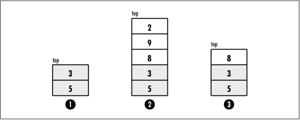

6.1 Description of Stacks
The distinguishing
characteristic of a stack is that it stores and retrieves data
in a last-in, first-out, or LIFO, manner. This means that the last element
placed on the stack is the first to be removed. A convenient
way to think of a stack is as a can of tennis balls. As we
place balls in the can, the can is filled up from the bottom
to the top. When we remove the balls, the can is emptied from
the top to the bottom. Furthermore, if we want a ball from the
bottom of the can, we must remove each of the balls above it.
In computing, to place an element on the top of a stack, we
push it; to remove an
element from the top, we pop it
(see Figure
6.1). Sometimes it is useful to inspect the element at the
top of a stack without actually removing it, in which case we
peek at it.

|